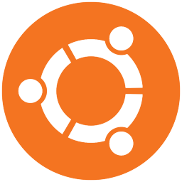
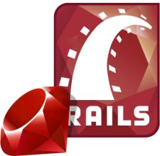
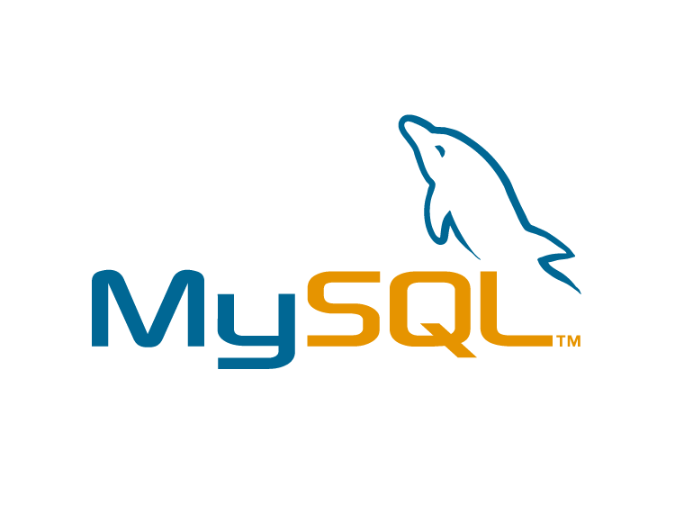
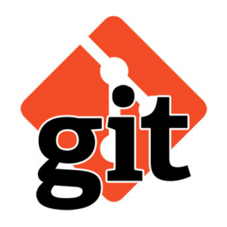
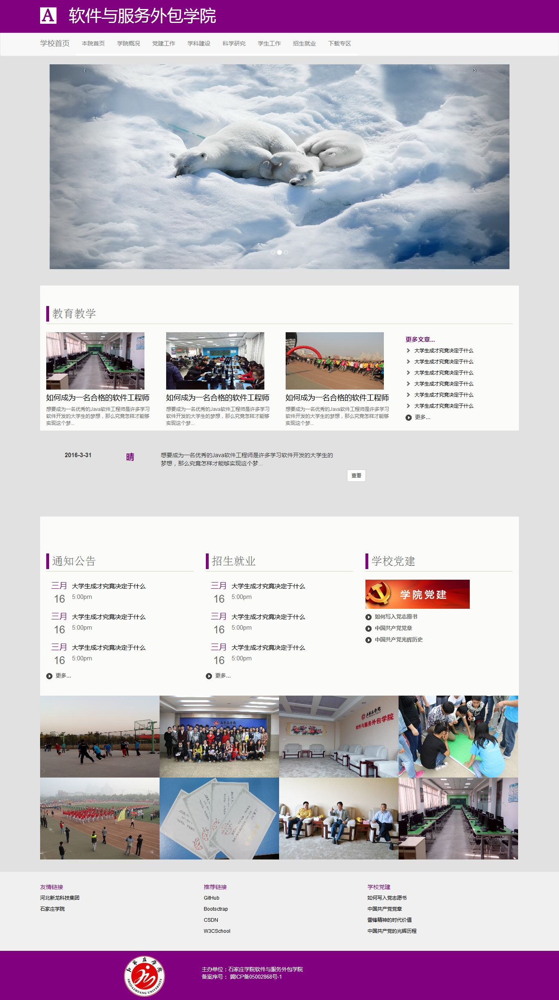
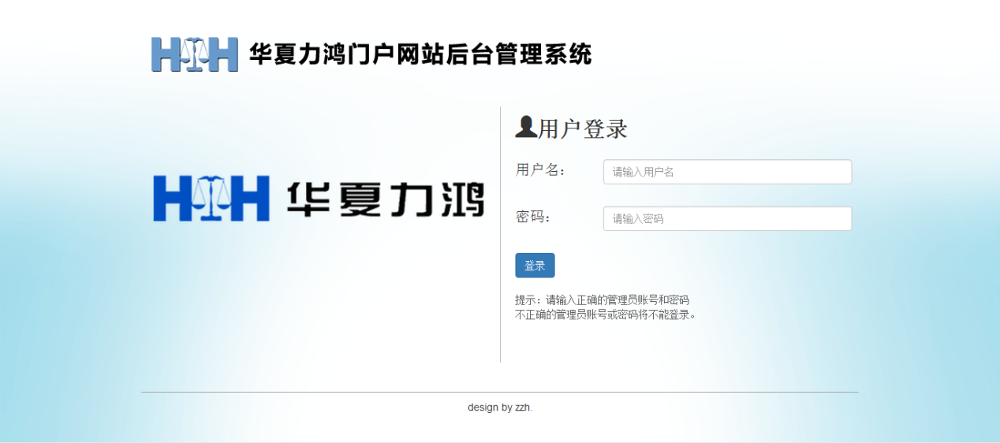
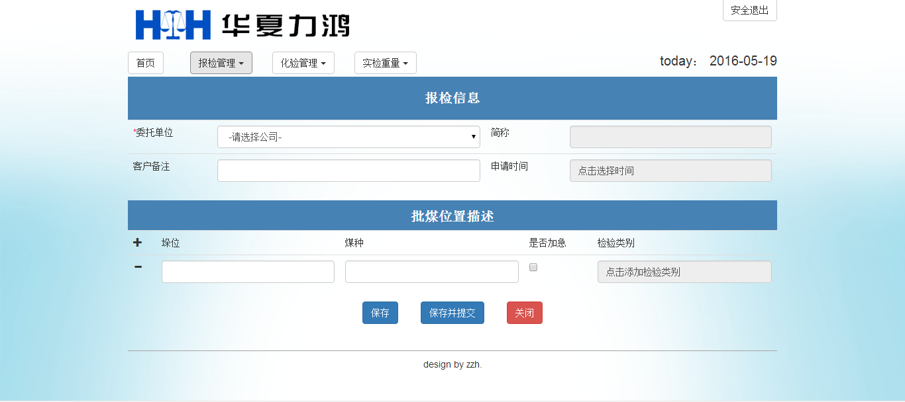

张泽华
求职意向:WEB开发工程师
"Talk is cheap,show me the code."
—— Linus Torvalds
WEB开发工程师简历
自我介绍
姓名
张泽华
性别
男
籍贯
河北省保定市
出生日期
1993年11月23日
电话
15533915860
邮箱
pulltheflower@163.com
专业
软件工程(本科)
英语
四级
技术掌握

Linux
- 熟练使用Ubuntu系统，能够使用终端对系统做基本的操作。
- 熟练使用Ubuntu进行web开发，熟练使用vim、Sublime text、Atom以及插件安装和配置。
WEB前端
- 熟练使用Html+Css实现对页面的基本布局。
- 掌握Bootstrap前端框架，能够使用Bootstrap快速搭建应用前端。
- 掌握Jquery，能用Jquery实现网页的视觉效果效果以及客户端验证。

PHP
- 熟练掌握LAMP环境的搭建以及LNMP环境的搭建，还有WAMP环境的搭建。
- 掌握面向过程的PHPWEB应用的开发，正在学习面向对象的PHPWEB开发。
- 掌握Laravel框架的搭建，能够在Linux开发简单的Laravel应用。
- 掌握mysql和mysqli函数，能够使用Mysql数据库开发PHP应用。

Ruby on Rails
- 掌握Ruby语言的基本语法和面向对象思想。
- 熟练掌握Linux下的Ruby on rails环境的搭建。
- 掌握基本的Ruby on rails命令，能够在Linux命令行下生成应用的脚手架。
- 掌握使用Gem的基本流程，可以使用Gem实现对应的功能。
- 能够在开发过程中使用Git进行版本控制。

Mysql
- 熟练使用命令行进行数据库的创建，数据表的添加删除，数据的增删改查。
- 掌握基本的查询语句，能够结合所用的后端语言做不同的配置。
- 掌握图形管理界面的安装和使用。

Git
- 拥有GitHub社区的账号和Coding的账号。
- 能够在Linux终端下实现仓库的创建，跟踪文件的添加，项目的提交。
- 掌握项目的创建和成员的添加，使团队开发变得方便。
项目经验

项目名称:
软件服务外包学院官网前端
项目时间:
2016年4月
环境及工具
Ubuntu,Sublime text,Bootstrap
项目简介:
对学校的软件服务外包学院前台进行改版
项目心得:
练习了前端的书写，增加了熟练度
代码地址:
https://coding.net/u/PullTheFlower/p/new/git


项目名称:
华夏力鸿煤炭检验系统
项目时间:
2015年6月
环境及工具
Windows,Sublime text,PHP,Mysql,Bootstrap,Jquery
项目简介:
对煤炭的报检，化验，制验，审核，实验重量
项目心得:
初次独立完成的php项目，前端设计和后端代码全部自己完成，熟悉了用php开发应用的过程，也加深了自己对web开发的理解。
代码地址:
https://github.com/PullTheFlower/CheckWeb
自我评价
- 性格开朗，对待工作认真负责，善于沟通、协调，有良好的团队协作能力。
- 喜欢Linux,喜欢开源，喜欢学习新技术，喜欢探索。
- 曾任校园广播台音乐节目主播兼编辑。
- 有比较强的动手能力，勇于面对困难和挑战，有分析问题与解决问题的能力。
- 早期使用Windows开发，后来越发喜欢Linux简洁的终端，于是开始转向Linux。
- 喜欢自己搭建环境，喜欢使用简洁的编辑器，不太喜欢IDE。